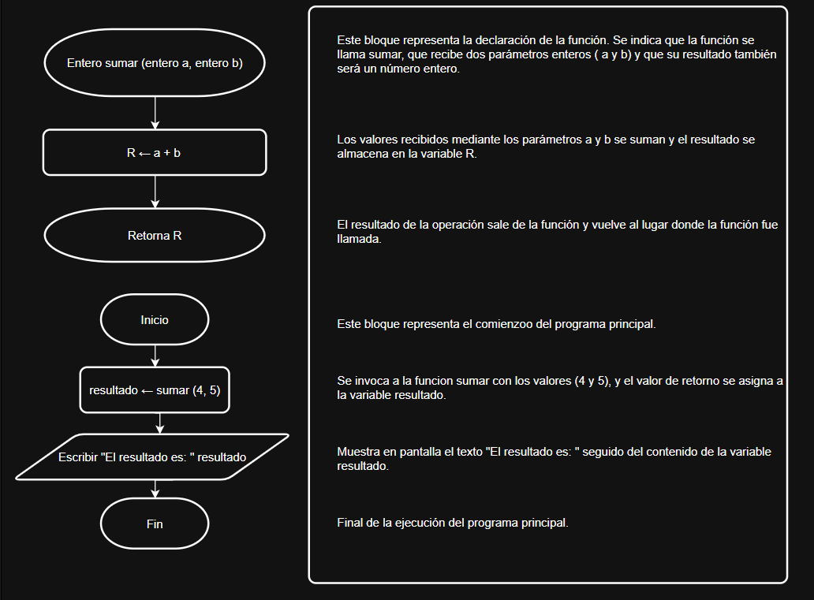

Programación modular (Funciones).
En el lenguaje de programación C++, las funciones son bloques de código que realizan una o varias tareas y pueden ser llamados desde otras partes del programa. Las funciones permiten la modularización del código, mejorando la legibilidad y la reutilización.

void funcion()// Defición de función.
{
// Cuerpo de la función.
}
Realizaremos una función llamada sumar que recibá dos números enteros como parámetros. Estos dos parámetros se sumarán y la función retornara el resultado. Una vez que hayamos definido la función, la utilizaremos en nuestro programa principal.
#include <iostream>
using namespace std;
int sumar(int a , int b) // Definición de la función.
{
return a + b ;
}
int main (){
int n1, n2, resultado;
cin>>n1;
cin>>n2;
resultado = sumar(n1, n2); //Invocación de la función.
cout<<"El resultado es: "<<resultado;
return 0;
}
Argumento y sin Retorno.
Las funciones también pueden no recibir argumentos ni devolver valores. En estos casos, se utiliza void como tipo de retorno.
#include <iostream>
using namespace std;
void saludar(); // Declaración de la función.
int main (){
saludar(); // Invocación de la función.
return 0;
}
void saludar() // Definición de la función.
{
cout<<"Hola. ";
}Argumentos.
Las funciones pueden recibir argumentos para realizar operaciones. Los argumentos se especifican en la lista de argumentos durante la declaración y definición de la función.
#include <iostream>
using namespace std;
void escribir( string a ); // Declaración de la función con argumento del tipo string.
int main (){
escribir( "Hola Mundo. "); // Invocación de la función.
return 0;
}
void escribir( string a ) // Definición de la función.
{
cout<< a ;
}Retorno.
El valor de retorno es el resultado que una función devuelve después de su ejecución. El tipo de retorno debe coincidir con el tipo especificado en la declaración de la función.
#include <iostream>
using namespace std;
float dividir( float x , float y ); // Declaración de la función.
int main (){
cout <<"El resultado es: "<<dividir(6,3)// Invocación de la función.
return 0;
}
float dividir( float x, float y ) // Definición de la función.
{
return x / y ;
}